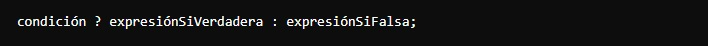
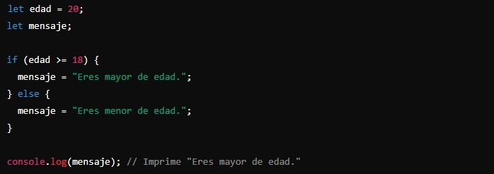
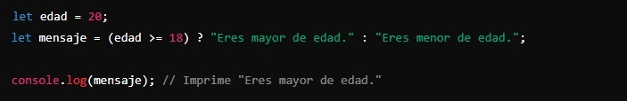

Un operador ternario es una forma más compacta y concisa de escribir un condicional if...else en una sola línea, por lo que es útil para simplificar el código cuando tienes condicionales sencillos. Se llama "ternario" porque involucra tres partes: una condición, una expresión a ejecutar si la condición es verdadera, y una expresión a ejecutar si la condición es falsa.
La sintaxis, por tanto, sería:
Vamos a ver cómo funciona con un ejemplo simple en el que queremos determinar si una persona es mayor de edad (18 años o más) con un condicional if...else:
Con un operador ternario, el ejemplo quedaría de la siguiente manera:
Aquí vemos que se establece la condición de que la edad tiene que ser mayor o igual a 18 (Condición: edad >= 18), la primera expresión es la verdadera, es decir, la que cumple con esa condición ("Eres mayor de edad.") y la segunda es la expresión falsa ("Eres menor de edad.").